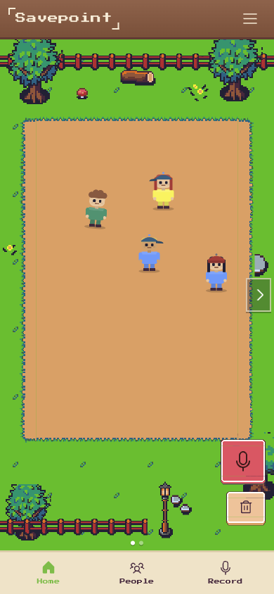
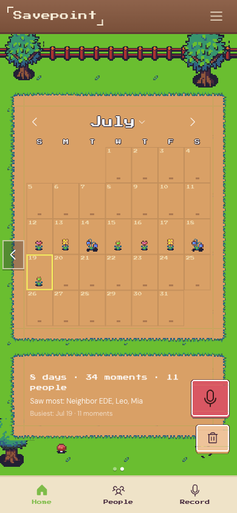
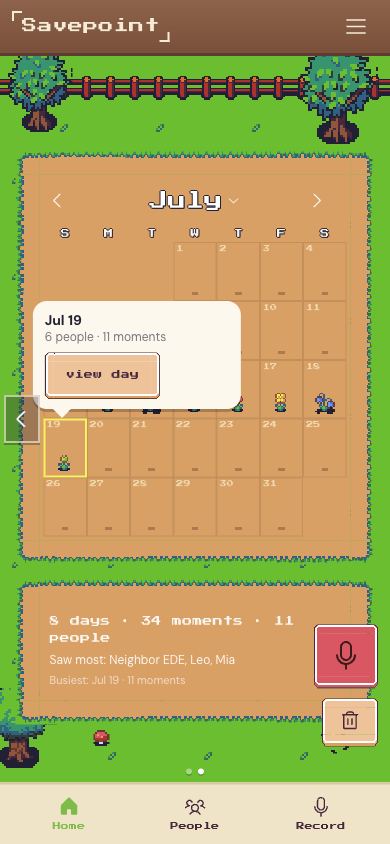
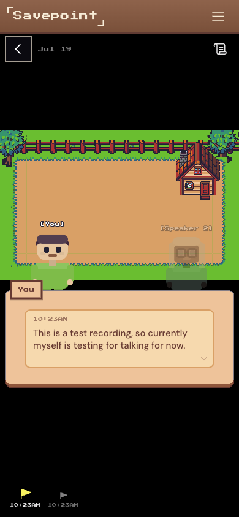
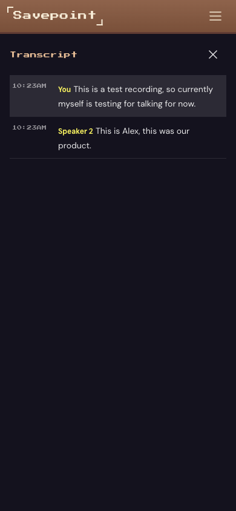
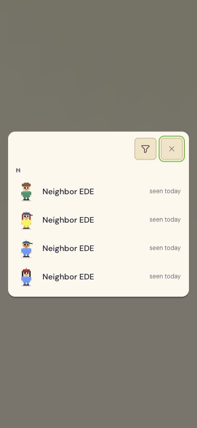
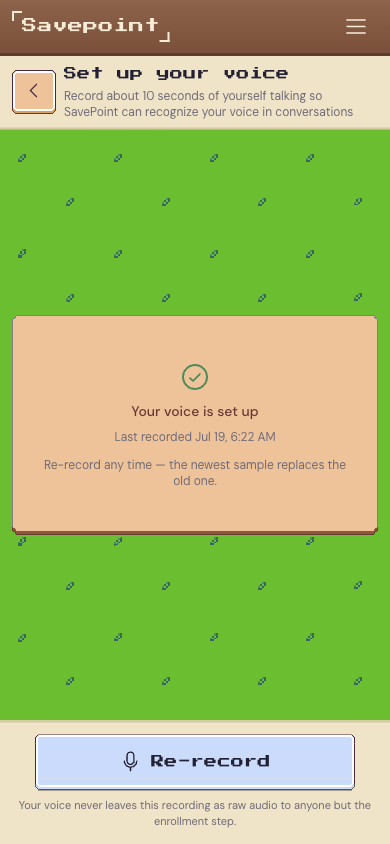

Why this exists
You've had this moment: someone waves, you smile back, and you have no idea who they are. Awkward, forgettable, you move on.
Now picture a parent living that moment every day, except it never moves on. The person who once knew your school schedule and the exact way you take your coffee starts asking the same question twice in one conversation. For people living with short-term memory conditions, that isn't occasional. It's constant, and they fight it with notebooks: by the bed, in the car, a name and a promise scrawled on every page they can't afford to lose. Eventually the notebooks take over the house, and because no house holds every page forever, some of them get thrown away. Not clutter. Actual days of someone's life.
SavePoint is a small hardware-plus-software attempt at a kinder version of that notebook. A Raspberry Pi 5 worn around the neck sees the people you talk to, your phone hears the conversation, and together they turn each person into a deterministic pixel character and each day into a plant in a garden you can walk back into.
What it does
Talk to someone at a party, a conference, a family dinner. Within a few seconds they show up on screen as their own sprite, words attached, journaled and time-stamped. At the end of the day, a cinematic scene is waiting: a scrubbable timeline, a garden that grew one more plant, and a short recap of who you saw.







How it's built
The camera and the microphone are two independently clocked sources: the Pi never hears, the phone never sees. Only derived data crosses the wire, sprite parameters and embeddings, never a raw photo or a raw recording. The server reconciles both streams by timestamp and matches a face or voice to an existing person by nearest embedding.

Two unsynchronized capture sources, reconciled server-side by timestamp.

Four MongoDB collections, and they aren't a bolt-on: this schema is the game world.
Built with
Team
Full Devpost submission → for the inspiration story and prize-track writeups. Source on GitHub →